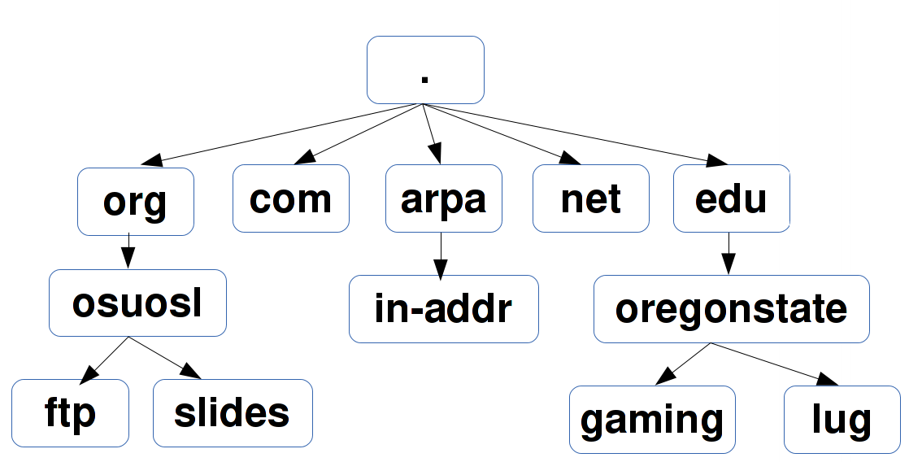

Agenda
- Networking review
- DNS
- Web Server Setup
Networking Review

Networking Review

Networking Review
Networking Review

Networking Review

Intro to DNS

I get the OSL's home page when visiting osuosl.org
How do I know where the page came from?
HOST(1) BIND9 HOST(1)
NAME
host - DNS lookup utility
SYNOPSIS
host [-aCdlnrsTwv] [-c class] [-N ndots] [-R number]
[-t type] [-W wait] [-m flag] [-4] [-6] {name}
[server]
DESCRIPTION
host is a simple utility for performing DNS lookups. It is
normally used to convert names to IP addresses and vice
versa. When no arguments or options are given, host prints
a short summary of its command line arguments and options.
OSL
$ host osuosl.org
osuosl.org has address 140.211.15.183
How did it know?
DNS
Domain Name System
{kind=link}
- Port 53
My laptop asked a DNS server how to get to osuosl.org.
Hierarchy of domains

Pop quiz
- What's 15 * 823?
- 12345
Recursive DNS
{kind=link}
- Always gives real answer or error
- Vulnerable to cache poisoning
Non-recursive
Uses cache or referral
- Includes all authoritative-only
- root and top-level domain servers
Another Quiz
- What's 15 * 823?
- How did you know so quickly?
Caching
You cached the answer.
DNS can be cached at routers, ISPs, and DNS servers to improve performance.
- Negative caching: Remember fails
TTL
/etc/resolv.conf
- Configuration for BIND (Berkeley Internet Name Domain tool)
- most common DNS resolver
- current version is BIND 9
$ cat /etc/resolv.conf
# Generated by resolvconf
domain wireless.oregonstate.edu
nameserver 128.193.15.13
nameserver 128.193.15.12
Can only handle recursive name servers, no referrals
/etc/hosts
Used to skip looking up the DNS
Useful for testing web sites
$ cat /etc/hosts
127.0.0.1 devops-bootcamp32.osuosl.org devops-bootcamp32 localhost
localhost.localdomain localhost4 localhost4.localdomain4
::1 localhost localhost.localdomain localhost6 localhost6.localdomain6
Load Balancing
Multiple IPs bound to a single hostname are returned in random order
$ host google.com
google.com has address 173.194.33.131
google.com has address 173.194.33.132
google.com has address 173.194.33.133
google.com has address 173.194.33.134
google.com has address 173.194.33.135
google.com has address 173.194.33.136
google.com has address 173.194.33.137
google.com has address 173.194.33.142
google.com has address 173.194.33.128
google.com has address 173.194.33.129
google.com has address 173.194.33.130
Records
Note
| A: | hostname -> IPV4 address |
|---|---|
| AAAA: | hostname -> IPV6 address |
| CNAME: | like an alias, "Go look up this name's record" |
| PTR: |
|
| SOA: |
|
| MX: | Email (more on this next week) |
Reverse DNS
Reverse segments, then end with in-addr.arpa
$ host osuosl.org # could also use dig
osuosl.org has address 140.211.15.183
$ dig 183.15.211.140.in-addr.arpa
...
;; AUTHORITY SECTION:
15.211.140.in-addr.arpa. 10795 IN SOA ns1.auth.osuosl.org. hostmaster.osuosl.org. 1398356710 300 900 604800 86400
Web Apps: A Bit of Review
- We created a python app called Systemview using the Flask framework
- We tested Systemview by running Flask's built-in webserver on the command line
- Systemview ran on a special port we had to open up on the virtual machine
What We Want To Do
- Install a production-quality web server on a standard port
- Serve Systemview using that web server
- Party
Why?
- Flask's web server is not robust or secure
- We want to use standard ports for our web apps
- We may want to run multiple apps on one server
- Web server administration is cool
What is a Web Server
{kind=link}
Note
Webserver software, not hardware
Webservers Talk HTTP
They don't run code (well, they kinda do)
- PHP, Python, Ruby, C don't run in your browser
- Separate servers (usually) run that code, and send the output of the code to the web server to send to your browser
- Sometimes those separate servers are web server modules
Note
Apache modules generally run in the apache process itself
A Digression: AJAX, JSON and APIs
- Browsers render HTML/CSS (layout)
- Browsers execute Javascipt (logic)
- Javascript can dynamically update the layout
- Javascript can handle user interaction
- Javascript can call back to the server for more data
- Javascript can process data
- Javascript is Client Side Logic
AJAX
- Asynchronous Javascript And XML
- An http request initiated by Javascript
- Javascript listens in the background
- The app sends a response containing data
- Javascript processes the data
- Traditionally XML, but now mostly JSON
Note
Lots of issues around security, javascript calling many servers, gathering data, calling servers outside the domain of the originating page, etc. Install RequestPolicy and NoScript, just to see who that web page is talking to while you read it.
JSON
JavaScript Object Notation
{"menu": {
"id": "file",
"value": "File",
"popup": {
"menuitem": [
{"value": "New", "onclick": "CreateNewDoc()"},
{"value": "Open", "onclick": "OpenDoc()"},
{"value": "Close", "onclick": "CloseDoc()"}
]
}
}}
XML
The same text expressed as XML:
<menu id="file" value="File">
<popup>
<menuitem value="New" onclick="CreateNewDoc()" />
<menuitem value="Open" onclick="OpenDoc()" />
<menuitem value="Close" onclick="CloseDoc()" />
</popup>
</menu>
APIs
- When web apps talk to web apps
- When javascript talks to a web app
- When curl talks to a web app
They talk HTTP, using clearly defined GET or POST params to initiate actions on the remote application.
curl http://graph.facebook.com/12345/friendlists
curl https://api.github.com/users/osuosl/repos
curl http://pub.sandbox.orcid.org/v1.1/0000-0001-7857-2795/orcid-bio
Note
Take a look at the source of a web page, look at all the javascript! How much of it is talking to Google, to Facebook, etc?
Let's Install a Web Server!
yum install httpd
Apache
What's this httpd thing?
"A patchy web server" - born of many patches to NCSA's HTTPD (1995)
- Venerable, tested, solid
- Old, complex, slow (not really that slow)
- Many modules for executing code
- Many modules for all kinds of other things too
Let's Serve Some Web
Apache's DocumentRoot is the default place where it will look for files to serve. It maps "/" in the URL to a location on disk
http://localhost:8080/index.html
^
"/" is the DocumentRoot
We'll write some HTML in the DocumentRoot for Apache to serve.
But First, Config Files
/etc/httpd/conf/httpd.conf
DocumentRoot "/var/www/html"
<Directory "/var/www/html">
Options Indexes FollowSymLinks
AllowOverride None
Order allow,deny
Allow from all
</Directory>
Note
Just looking, we are not editing the configs here. Note the DocumentRoot and Directory
Wait, What am I Writing Again?
HTML: Hyper Text Markup Language
Go to the DocumentRoot and create an html file:
cd /var/www/html
vim index.html
<html>
<head>
<title>This is only a test!</title>
</head>
<body>
<p>Nothing to see here, move along</p>
</body>
</html>
Point your browser to: http://localhost:8080/index.html
Note
HTML, is it code? Is it a language? Can you do logic with it? What happens if you forget the <html>? The browser does the rendering, the web server doesn't care, it just sends the data along. HTTP Content-Type header says what kind of data.
Voila!
- Apache receives a request for /index.html
- It translates "/" into /var/www/html using the DocumentRoot directive
- It looks in /var/www/html for the file "index.html"
- It finds your file and sends its contents, along with HTTP headers, back to your browser
Note
Have a look at the page source. Edit the file, remove <html>, etc, look at source again. If time allows, use developer tools, firebug, etc to look at http headers
But I Want to Run Code!
Let's put some PHP code in the DocumentRoot:
vim index.php
<html>
<head>
<title>This is only a test!</title>
</head>
<body>
<?php print "Hey, this is PHP!" ?>
</body>
</html>
Then go to http://localhost:8080/index.php
What Went Wrong?
Apache doesn't know what PHP is, it needs a module to execute the PHP code and return data it can serve
yum install php
service httpd restart
Note
Pop quiz - where do you look to find out what went wrong? Look at log files, talk about them, then look at page source.
Voila, Again.
How does Apache know what to do with index.php?
/etc/httpd/conf.d/php.conf
<IfModule prefork.c>
LoadModule php5_module modules/libphp5.so
</IfModule>
<IfModule worker.c>
LoadModule php5_module modules/libphp5-zts.so
</IfModule>
AddHandler php5-script .php
AddType text/html .php
DirectoryIndex index.php
Note
CentOS, and most distribution system packages put these conf files for modules in place for you. httpd.conf includes everything in conf.d - similar for Nginx
Ok, But I Want To Serve a Python App...
There's a module for that! (Actually several, but we are going to use this one)
WSGI: Web Server Gateway Interface
- Standardized interface for python apps to talk to web servers
- Works with many different servers
- Allows separation of python app and web server processes
Note
talk about mod_python - runs python scripts directly, not bad for single scripts, but unwieldy for applications and frameworks.
Sounds Great, Let's Go!
yum install mod_wsgi
Let's clone the systemview app into a reasonable location while we are at it
cd /var/www
git clone https://github.com/DevOpsBootcamp/systemview.git
cd systemview
git checkout wsgi
Note
Talk about the location - can be anywhere, but be consistent - /var/www is actually not in the web root, not accessible by default, don't put things under the docroot!
Don't Forget Virtualenv!
(in the systemview/ directory)
virtualenv --no-site-packages venv
source venv/bin/activate
pip install -r requirements.txt
And lets make sure everything is owned by the web server:
chown -R apache ../systemview
Note
Web server user/group ownership is a major source of breakage - get cloning/pulling as the wrong user will change perms on files, possibly breaking things
What Makes an App WSGI?
systemview.wsgi
activate_this = '/var/www/html/systemview/venv/bin/activate_this.py'
execfile(activate_this, dict(__file__=activate_this))
import sys
sys.path.insert(0, '/var/www/html/systemview')
from systemview import app as application
Configuring Apache for Systemview
/etc/httpd/conf.d/systemview.conf
WSGISocketPrefix /var/run
WSGIDaemonProcess systemview user=apache group=apache threads=5
WSGIScriptAlias /systemview /var/www/systemview/systemview.wsgi
<Directory /var/www/systemview>
WSGIProcessGroup systemview
WSGIApplicationGroup %{GLOBAL}
Order deny,allow
Allow from all
</Directory>
(Look for this in systemview/docs/systemview.conf)
Note
This will go into a vhost some day
Even More Voila
http://localhost:8080/systemview
There are a lot of steps to getting this app up, wouldn't it be nice to automate this?
Note
Future topics - configuration management and automated deploys, virtual hosts, best practices for app location, Nginx, UWSGI, PHP-FPM, etc
Homework
- Deploy Systemview's master branch with Apache (we merged the database code)
- Read about Apache Virtualhosts
- Install Nginx and UWSGI, deploy Systemview